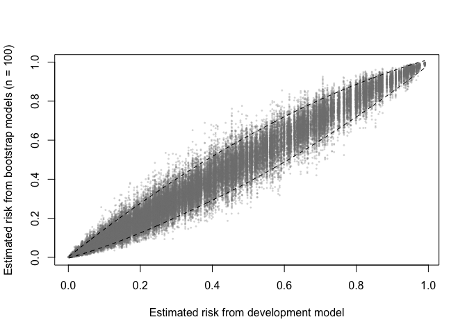
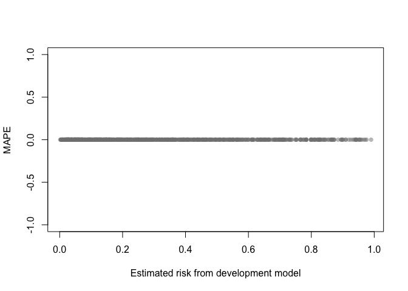
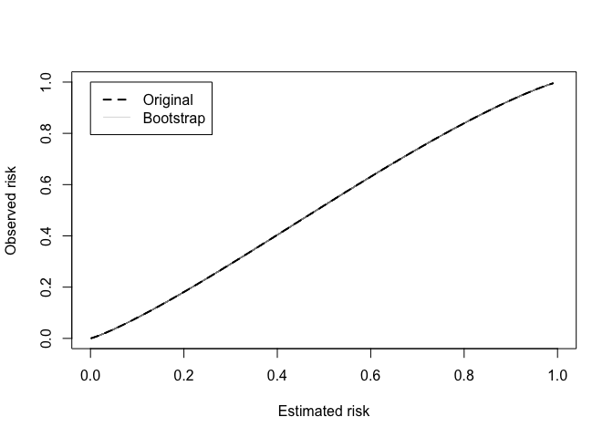
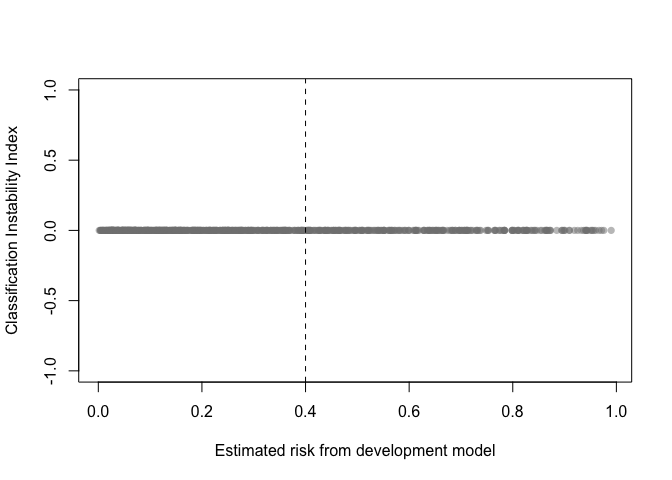
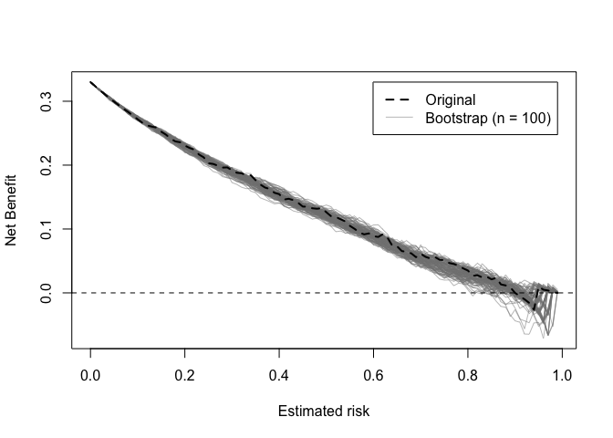

The goal is to offer a package that can produce bias-corrected performance measures for clinical prediction models with binary outcomes for a range of model development approaches available in R (similar to rms::validate). There are also functions for assessing prediction stability, as described in Riley and Collins (2023).
To install:
install.packages("pminternal") # cran
# or
devtools::install_github("stephenrho/pminternal") # developmentExample
In the example below we use bootstrapping to correct performance measures for a glm via calculation of ‘optimism’ (see vignette("pminternal") and vignette("validate-examples") for more examples):
library(pminternal)
# make some data
set.seed(2345)
n <- 800
p <- 10
X <- matrix(rnorm(n*p), nrow = n, ncol = p)
LP <- -1 + apply(X[, 1:5], 1, sum) # first 5 variables predict outcome
y <- rbinom(n, 1, plogis(LP))
dat <- data.frame(y, X)
# fit a model
mod <- glm(y ~ ., data = dat, family = "binomial")
# calculate bootstrap optimism corrected performance measures
(val <- validate(fit = mod, method = "boot_optimism", B = 100))
#> It is recommended that B >= 200 for bootstrap validation
#> apparent optimism corrected n
#> C 0.8567 0.0093 0.8474 100
#> Brier 0.1423 -0.0054 0.1477 100
#> Intercept 0.0000 0.0175 -0.0175 100
#> Slope 1.0000 0.0529 0.9471 100
#> Eavg 0.0045 -0.0048 0.0093 100
#> E50 0.0039 -0.0050 0.0089 100
#> E90 0.0081 -0.0107 0.0187 100
#> Emax 0.0109 -0.0057 0.0165 100
#> ECI 0.0027 -0.0038 0.0065 100The other available methods for calculating bias corrected performance are the simple bootstrap (boot_simple), 0.632 bootstrap optimism (.632), optimism via cross-validation (cv_optimism), and regular cross-validation (cv_average). Please see ?pminternal::validate and the references therein. Bias corrected calibration curves can also be produced (see cal_plot). Confidence intervals can also be added via confint.
For models that cannot be supported via fit, users are able to specify their own model (model_fun) and prediction (pred_fun) functions as shown below. Note that when specifying user-defined model and prediction functions the data and outcome must also be provided. It is crucial that model_fun implements the entire model development procedure (variable selection, hyperparameter tuning, etc). For more examples, see vignette("pminternal") and vignette("validate-examples").
# fit a glm with lasso penalty
library(glmnet)
#> Loading required package: Matrix
#> Loaded glmnet 4.1-8
lasso_fun <- function(data, ...){
y <- data$y
x <- as.matrix(data[, which(colnames(data) != "y")])
cv <- cv.glmnet(x=x, y=y, alpha=1, nfolds = 10, family="binomial")
lambda <- cv$lambda.min
glmnet(x=x, y=y, alpha = 1, lambda = lambda, family="binomial")
}
lasso_predict <- function(model, data, ...){
y <- data$y
x <- as.matrix(data[, which(colnames(data) != "y")])
predict(model, newx = x, type = "response")[,1]
}
(val <- validate(data = dat, outcome = "y",
model_fun = lasso_fun, pred_fun = lasso_predict,
method = "boot_optimism", B = 100))
#> It is recommended that B >= 200 for bootstrap validation
#> apparent optimism corrected n
#> C 0.856 0.0070 0.849 100
#> Brier 0.143 -0.0041 0.147 100
#> Intercept 0.080 0.0191 0.061 100
#> Slope 1.155 0.0449 1.110 100
#> Eavg 0.020 0.0013 0.019 100
#> E50 0.019 0.0026 0.017 100
#> E90 0.040 0.0021 0.038 100
#> Emax 0.044 0.0145 0.029 100
#> ECI 0.053 0.0087 0.044 100The output of validate (with method = "boot_*") can be used to produce plots for assessing the stability of model predictions (across models developed on bootstrap resamples).
A prediction (in)stability plot shows predictions from the B (in this case 100) bootstrap models applied to the development data.
prediction_stability(val, smooth_bounds = TRUE)
A MAPE plot shows the mean absolute prediction error, which is the difference between the predicted risk from the development model and each of the B bootstrap models.
mape_stability(val)
A calibration (in)stability plot depict the original calibration curve along with B calibration curves from the bootstrap models applied to the original data (y).

The classification instability index (CII) is the proportion of individuals that change predicted class (present/absent, 1/0) when predicted risk is compared to some threshold. For example, a patient predicted to be in class 1 would receive a CII of 0.3 if 30% of the bootstrap models led to a predicted class of 0.
classification_stability(val, threshold = .4)
Decision curves implied by the original and bootstrap models can also be plotted.
dcurve_stability(val)